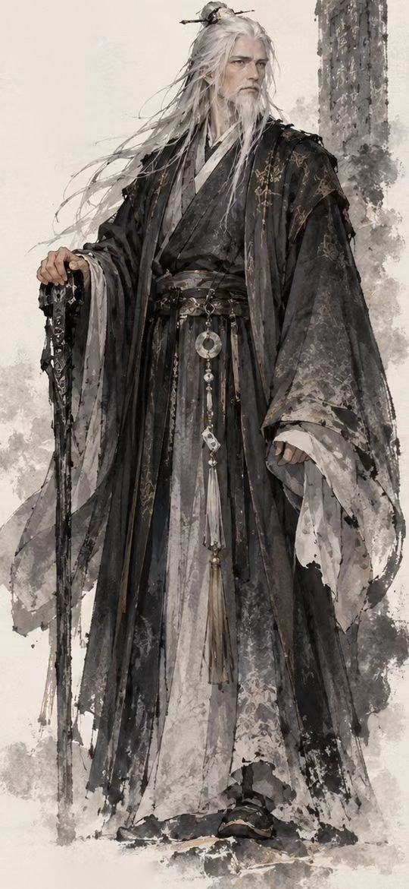
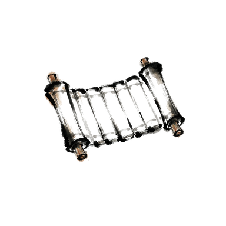
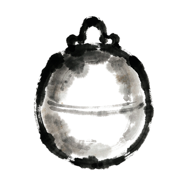
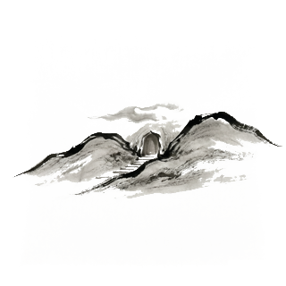
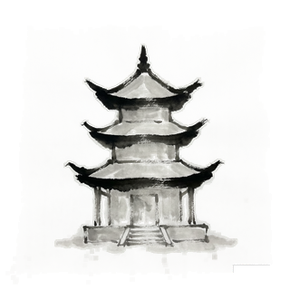
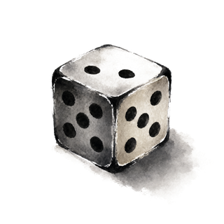

仙途手札闲事收在此处




这会永久删除当前角色的境界、修为、灵石、背包、法宝、洞府与全部 NPC 记忆。删除后回到创角页，无法撤销。
若只是换设备或防清缓存，请先去「存档备份」导出一份。
进度只存在这台设备的浏览器里。换设备、换浏览器、清缓存之前，先导出一份。
本备份包含角色主存档（境界、修为、灵石、背包、装备、法宝、宗门等），并附带本机记录：每日签到进度、守碑人与崔九的记忆、NPC 来访记录、新手引导完成状态、历史最高境界纪录。换设备导入后这些会一起迁移。
覆盖当前进度不可撤销，建议先导出一份。
角色主存档与本机记录（签到、NPC 记忆、来访记录、引导状态、最高境界）会一并覆盖；文件里没带本机记录时（例如旧版导出的备份），这几项保持不动。

词条品质：凡·白 / 灵·绿 / 宝·蓝 / 仙·紫 / 神·金 —— 神品现世，宝光冲霄点槽位右侧「锁」可保留该词条；锁得越多，灵石价越高（每多锁 1 条翻倍）。
只拆账、不改数值：每一行都是当前生效的底、乘区与加区。